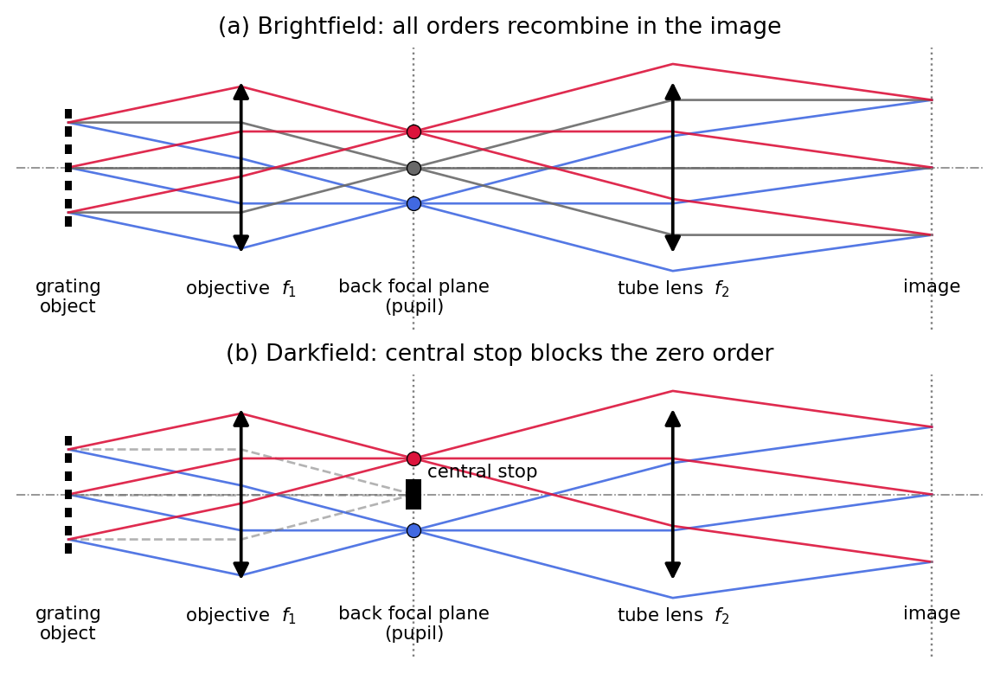
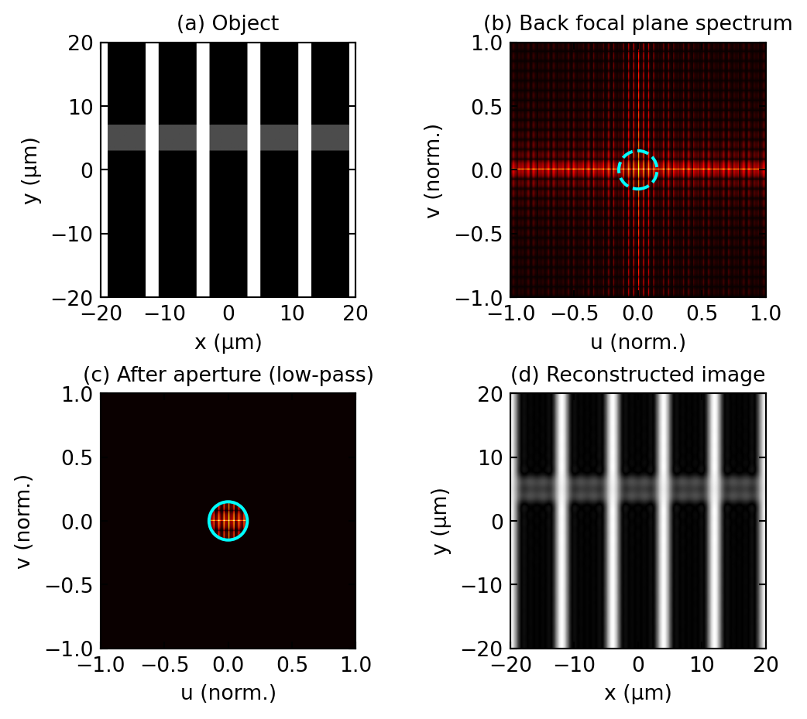
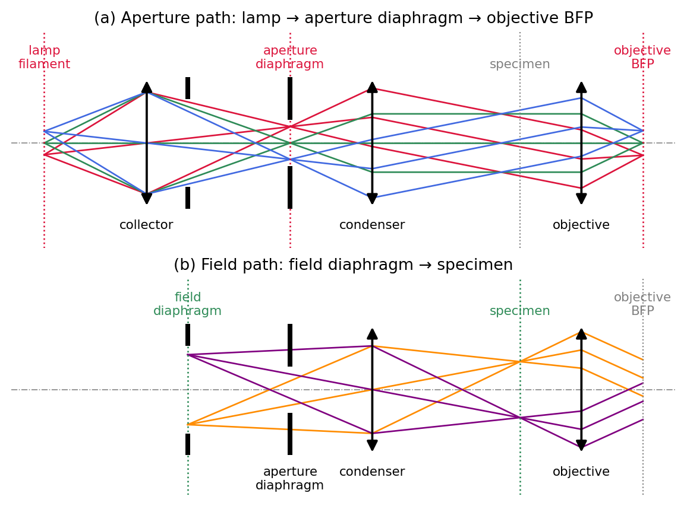
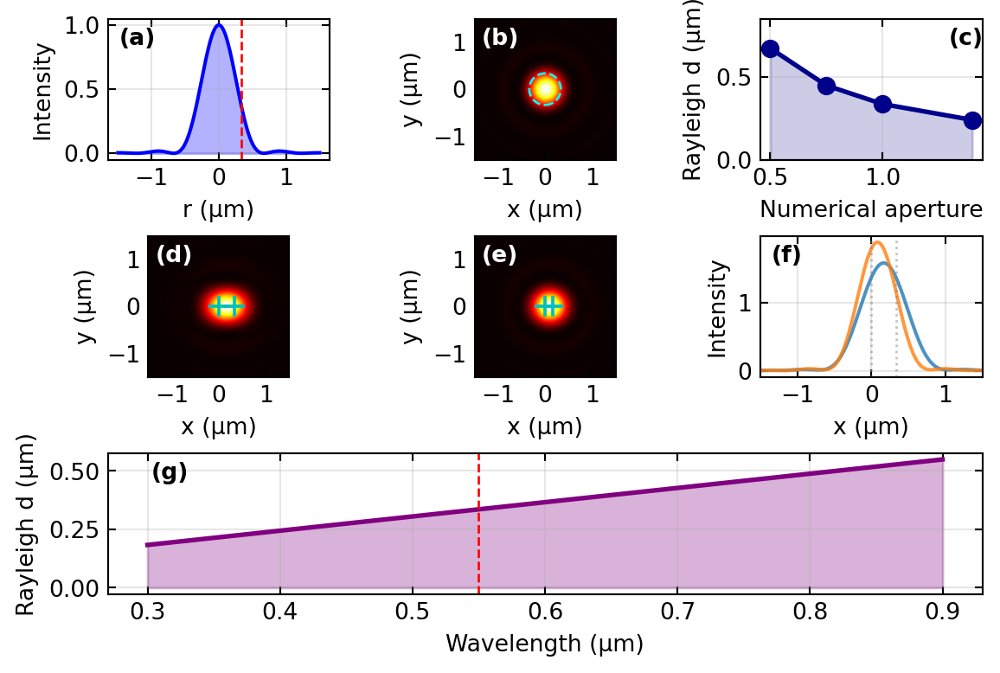
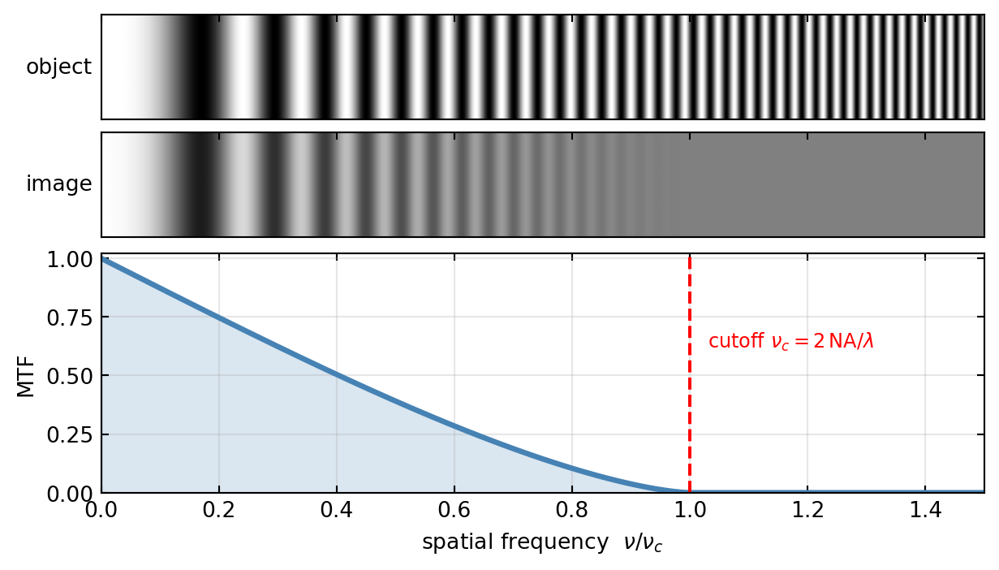
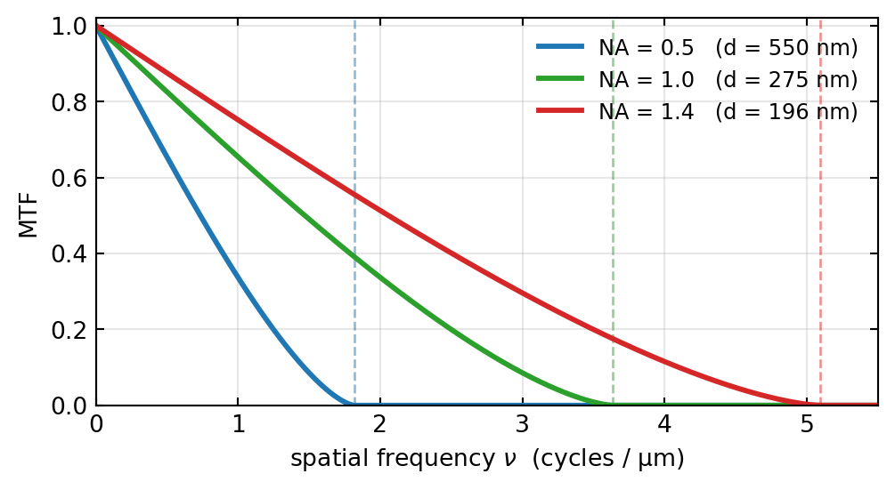
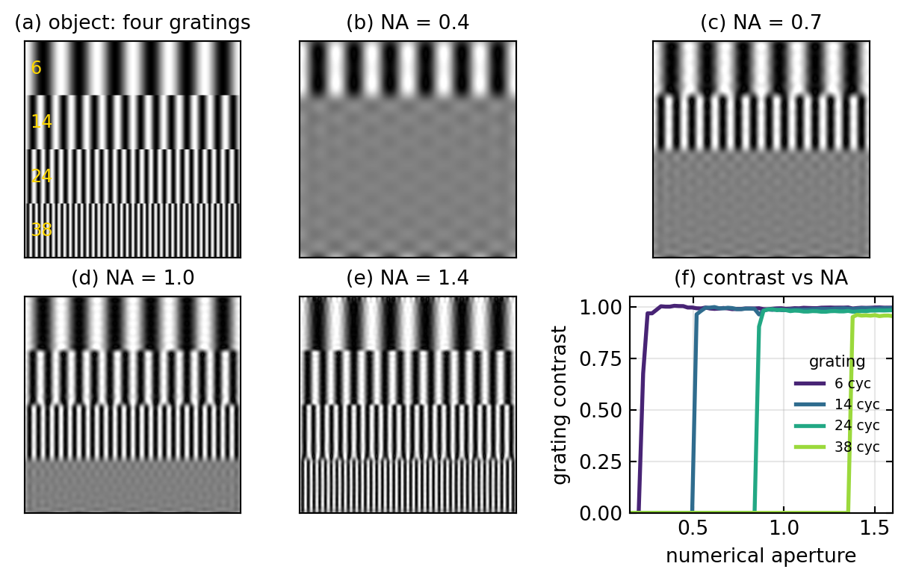
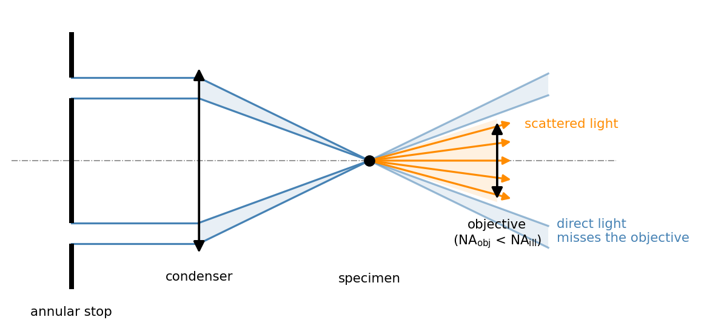
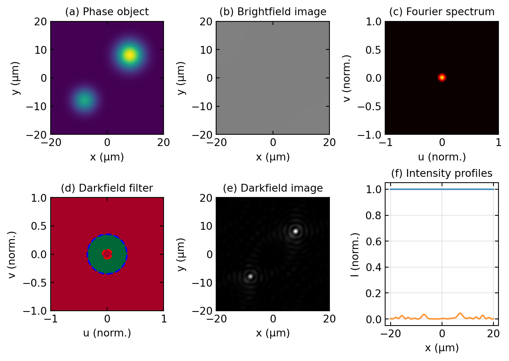

Microscopy I: Brightfield and Darkfield
Introduction: From Fourier Optics to Image Formation
The previous lectures developed the complete Fourier toolkit for optics: the decomposition of fields into spatial frequencies and the angular spectrum in Fourier Optics: Foundations, and the lens as a Fourier transformer, the 4f system, the point-spread function, and the resolution limits in Fourier Optics: Image Formation. This lecture applies that toolkit to the most important optical instrument in science and medicine, the microscope.
We concentrate on brightfield and darkfield microscopy, the two most fundamental transmitted-light imaging modes. The questions we answer are practical ones that the Fourier framework makes precise: how the microscope is laid out so that a real pupil plane exists and can be manipulated, how the specimen should be illuminated, and why some objects show strong contrast while others, although physically present, remain completely invisible. The next lecture, Phase Contrast & DIC, continues directly from the point where this one ends.
The Microscope as a Fourier Filter
Recap: Imaging as a Double Fourier Transform
Everything in this lecture rests on three results from the Fourier optics lectures, which we only recall here:
- A thin lens performs an exact Fourier transform between its focal planes: the field in the back focal plane is the spatial-frequency spectrum of the field in the front focal plane, with the scale \(\nu = x_\text{BFP}/\lambda f\) (The Lens as a Fourier Transformer).
- Two such transforms in sequence form an image; masks placed in the intermediate Fourier plane filter the spatial frequencies of the object (Spatial Filtering and the 4f System).
- The finite aperture of any real lens makes imaging a low-pass filtering operation, characterized by the point-spread function and the transfer functions OTF and MTF (PSF, OTF, and Resolution).
A microscope is precisely such a double-Fourier-transform system: the objective forms the spectrum of the specimen in its back focal plane, and the tube lens transforms it back into the magnified image. Image formation in a microscope is therefore spatial filtering, and the design of every contrast technique in this and the following lectures amounts to choosing what to do in the Fourier plane.
Numerical Aperture and the Frequency Cutoff
What is specific to the microscope is how its frequency cutoff is expressed. Microscope objectives collect light over a very large angular range, characterized by the numerical aperture
\[\text{NA} = n \sin\alpha,\]
where \(\alpha\) is the half-angle of the accepted light cone and \(n\) is the refractive index of the immersion medium (close to 1 for air, about 1.515 for immersion oil). The highest spatial frequency of the specimen that the objective can pass is
\[u_{\max} = \frac{\text{NA}}{\lambda}.\]
Every finer detail is irretrievably absent from the image, regardless of magnification. Raising \(n\) with an immersion medium increases the cutoff beyond what any air lens can reach, which is why high-resolution objectives are immersion objectives.
The Pupil Plane
The intermediate Fourier plane of the microscope is the back focal plane (BFP) of the objective, also called the pupil plane. It is physically accessible: with a removable lens (Bertrand lens) or simply by removing the eyepiece one can look directly at it. Figure 1 shows the geometry for the classic test object, a diffraction grating. Each diffraction order leaves the grating as a parallel bundle at its own angle and is focused to a distinct spot in the BFP: the diffraction pattern of the object is laid out there, exactly as the lens-Fourier-transform theorem demands. The tube lens then recombines the orders into the image.
This geometry is also the basis of Abbe’s famous demonstration: blocking individual spots in the BFP removes the corresponding spatial frequencies from the image. Panel (b) shows the variant that this lecture builds toward, a central stop that blocks the zero order and produces a darkfield image.
The same filtering can be demonstrated numerically. The simulation below pushes a line object through the double Fourier transform with a circular aperture in the pupil, the digital twin of the optical experiment above.

One practical consequence is worth noting already here: closing the objective aperture diaphragm reduces the effective NA and thus the cutoff \(u_{\max}\). The image becomes smoother and often appears to gain contrast, but the gain is paid for with resolution. The full catalogue of pupil masks (low-pass, high-pass, phase plates) was given in the 4f spatial filtering section; in this lecture we use the high-pass version (darkfield, below), and the next lecture uses the phase plate (phase contrast).
Köhler Illumination
Why Köhler Illumination Matters
Good illumination is as decisive for image quality as the objective itself, and two classical schemes compete. In critical illumination, the original arrangement, the light source is imaged directly onto the specimen. This gives high intensity but very uneven brightness, and any dust or imperfection on the condenser is superimposed on the specimen, which makes the method poorly suited to quantitative work. Köhler illumination, introduced by August Köhler in 1893 and now the universal standard, instead places an image of the source in the front focal plane of the condenser. Each source point then illuminates the specimen with its own parallel beam: the lamp structure is completely blurred out at the specimen, while every specimen point receives light from the full range of illumination angles.
The Two Ray Paths
The elegance of the Köhler arrangement lies in its two interleaved sets of conjugate planes, traced in Figure 3. The aperture path (a) connects lamp filament, condenser aperture diaphragm, and objective back focal plane: all images of the source. The field path (b) connects field diaphragm, specimen plane, and the final image: all images of the field of view. Because the two sets are separated, each diaphragm controls exactly one property without disturbing the other:
- the field diaphragm (conjugate to the specimen) sets the size of the illuminated area, and
- the condenser aperture diaphragm (conjugate to the source and to the objective pupil) sets the angular cone of the illumination, i.e. the condenser NA.
In practice one closes the field diaphragm to just outside the visible field, which suppresses stray light, and opens the condenser aperture to roughly eighty to ninety percent of the objective aperture.

Illumination Coherence
The condenser aperture has a second, more subtle role: it sets the spatial coherence of the illumination. A nearly closed aperture approximates a single plane wave and produces coherent imaging; a wide-open aperture sends light through the specimen from many independent directions at once and produces effectively incoherent imaging. The conceptual and mathematical difference between the two regimes, linearity in field amplitude versus linearity in intensity, was developed in the coherent vs. incoherent imaging section of the Fourier optics lecture.
In microscopy the degree of partial coherence is conveniently expressed by the coherence parameter
\[\sigma = \frac{\text{NA}_\text{cond}}{\text{NA}_\text{obj}},\]
the ratio of condenser to objective aperture, which is exactly what the aperture diaphragm in Figure 3 dials in. \(\sigma \to 0\) gives coherent imaging with its sharp edges, ringing artefacts, and lower resolution; \(\sigma \gtrsim 1\) approaches incoherent imaging with smoother response and the doubled frequency cutoff discussed below. The practical setting \(\sigma \approx 0.7\text{--}0.9\) is a deliberate compromise between resolution and contrast.
Resolution and the Transfer of Contrast
The Point-Spread Function and the Rayleigh Criterion
For a circular pupil the point-spread function is the Airy pattern and the Rayleigh criterion gives the minimum resolvable distance; both were derived in the PSF and resolution section. For the microscope the key results, expressed through the numerical aperture, are the Airy radius and Rayleigh distance
\[r_\text{Airy} = \delta r_\text{Rayleigh} = \frac{0.61\,\lambda}{\text{NA}} .\]
For green light at \(\lambda = 550\) nm and an oil-immersion objective with NA = 1.4 this evaluates to about 240 nm; an air objective with NA = 0.95 reaches about 360 nm. Figure 4 collects the quantitative picture: the Airy profile, the two-point resolution test at and below the Rayleigh distance, and the scaling with NA and wavelength.

The OTF of a Microscope
So far, resolution has been a yes-or-no question: the objective either collects a given spatial frequency or it does not. The optical transfer function (OTF) turns this into a question of contrast. Picture the specimen as a sum of sinusoidal gratings of every spatial frequency \(\nu\), where a grating of period \(d\) has frequency \(\nu = 1/d\). The microscope reproduces each grating in the image, but with its contrast reduced by a factor that depends on \(\nu\). That factor, plotted against frequency, is the OTF; for the incoherent (intensity) imaging of a microscope it is real and positive, and we call its value the modulation transfer function (MTF).
To make this concrete, define the contrast, or modulation, of a grating from its brightest and darkest points,
\[C = \frac{I_{\max} - I_{\min}}{I_{\max} + I_{\min}}.\]
If the object grating has contrast \(C_\text{obj}\), the image grating has contrast
\[C_\text{img} = \text{MTF}(\nu)\, C_\text{obj}.\]
At \(\nu = 0\) the MTF is one, so a uniform or very coarse pattern keeps its contrast perfectly. As \(\nu\) rises the MTF falls, so fine gratings come out washed out. At the cutoff
\[\nu_c = \frac{2\,\text{NA}}{\lambda}\]
the MTF reaches zero: any grating finer than \(\lambda/(2\,\text{NA})\) is rendered as uniform grey, no matter how strong its contrast in the object. Figure 5 demonstrates this with a single grating whose frequency increases from left to right. The object keeps full contrast everywhere, but the image fades and dies out exactly where the MTF reaches zero.

For the uniform circular pupil of an objective, the autocorrelation that defines the incoherent OTF (image formation as convolution) can be evaluated in closed form. It is the smooth curve in the figures,
\[\text{MTF}(\nu) = \frac{2}{\pi}\left[\arccos\!\left(\frac{\nu}{\nu_c}\right) - \frac{\nu}{\nu_c}\sqrt{1 - \left(\frac{\nu}{\nu_c}\right)^2}\,\right], \qquad \nu_c = \frac{2\,\text{NA}}{\lambda}.\]
The cutoff is the resolution limit told in the frequency domain: \(\nu_c = 2\,\text{NA}/\lambda\) is exactly the reciprocal of the finest resolvable period \(\lambda/(2\,\text{NA})\), the Abbe limit met earlier. Opening the numerical aperture pushes the cutoff outward, so finer gratings keep a nonzero contrast, as Figure 6 shows in real units.

One subtlety connects back to the condenser. The cutoff \(2\,\text{NA}/\lambda\) is the incoherent value, twice the coherent cutoff \(\text{NA}/\lambda\). The reason is that the incoherent OTF is the autocorrelation of the pupil, and an autocorrelation is twice as wide as the function it is built from. This is the formal counterpart of a fact from the previous section: the wide-open, effectively incoherent condenser resolves finer detail than a nearly closed, coherent one.
Numerical Aperture in Practice
Figure 7 makes the cutoff tangible. A resolution target carrying four gratings of increasing spatial frequency is imaged with objectives of increasing NA. The objective acts as a hard low-pass filter on spatial frequency, so a grating reappears only once the aperture is wide enough to collect its diffraction orders: the coarse gratings are resolved at every NA, and each finer one switches on at a higher NA. This is the numerical version of the Abbe experiment in Figure 1.

Brightfield Microscopy
Contrast in Brightfield
In brightfield, or transmitted-light, microscopy the specimen is illuminated from below and contrast arises in two distinct ways. Absorbing structures, the amplitude objects, remove light from the transmitted beam, so that pigmented cells, stained tissue, or metallic nanoparticles appear dark on a bright background and the image intensity reflects the local absorption directly. Transparent structures, the phase objects, absorb essentially no light but differ in refractive index from their surroundings, so they impose a phase shift \(\phi = 2\pi\,\Delta n\, d/\lambda\) on the transmitted wave without changing its amplitude.
The difficulty is that a pure phase shift leaves the intensity unchanged, so phase objects produce no brightfield contrast at all. Since most biological material, including proteins, lipids, and nuclei, is very nearly transparent, this is a severe limitation: unstained living cells are essentially invisible in brightfield, which is precisely why staining and the alternative contrast methods of this and the next lecture were developed.
The Weak Phase Object
The invisibility of phase objects deserves a closer look, because the same calculation explains how darkfield and phase contrast restore visibility. For a weak phase object the transmitted field is
\[E(x, y) = E_0\, e^{i\phi(x, y)} \approx E_0\,\big[\,\underbrace{1}_{\text{background}} + \underbrace{i\phi(x, y)}_{\text{scattered}}\,\big],\]
with \(\phi(x, y) \ll 1\). The field splits into the unscattered background, which fills the zero order of the pupil, and a weak scattered wave proportional to \(\phi\) that carries all the specimen information into the higher spatial frequencies. The crucial detail is the factor \(i\): the scattered wave is 90° out of phase with the background. The intensity is then
\[I = |E|^2 \approx E_0^2\,\big[1 + 2\,\mathrm{Re}(i\phi)\big] = E_0^2 ,\]
because \(\mathrm{Re}(i\phi) = 0\) for real \(\phi\): the cross term between background and scattered wave vanishes to first order. The specimen information is present in the field but hidden from any intensity measurement. Every phase-sensitive technique works by manipulating one of the two terms in the pupil plane: darkfield removes the background entirely (this lecture), and phase contrast shifts its phase by 90° so that the cross term no longer vanishes (next lecture).
Darkfield Microscopy
Principle: Blocking the Zero-Order
Darkfield microscopy makes the unscattered light disappear and keeps only the light that the specimen has scattered. The principle was already visible in Figure 1 (b): a central stop in the back focal plane blocks the zero-order beam, so the detector sees bright, scattering structures standing out against a dark background.
Darkfield Illumination Geometry
In practice the zero order is rarely blocked inside the objective. The standard trick, shown in Figure 8, moves the problem to the illumination side: an annular stop below the condenser shapes the illumination into a hollow cone whose angles exceed the acceptance angle of the objective, \(\text{NA}_\text{ill} > \text{NA}_\text{obj}\). The direct light then crosses the specimen plane but misses the objective aperture entirely; only light that the specimen scatters into smaller angles is collected. A directional variant is oblique illumination with a knife edge (discussed below). In every case the geometric condition is the same: without a specimen, no light may reach the detector.

Contrast Mechanism
The weak-phase decomposition introduced earlier makes the darkfield contrast mechanism transparent. The field behind the specimen is background plus scattered wave, \(E = E_0 + E_s\). Darkfield removes the background, so the detected intensity is
\[I_\text{DF} = |E_s|^2 ,\]
and for a weak phase object with \(E_s = i\phi E_0\):
\[I_\text{DF} \approx |\phi|^2\, E_0^2 .\]
Two properties follow. First, phase objects become visible: the signal is quadratic in \(\phi\), weak but sitting on a perfectly dark background. Second, darkfield is a background-free detection method: a scatterer far smaller than the resolution limit, for instance a gold nanoparticle of 40 nm diameter, still appears as a bright Airy-disk-sized spot, because visibility is limited by the darkness of the background rather than by resolution. Darkfield cannot resolve such objects, but it detects them superbly, which is why it is a standard tool for nanoparticle tracking and was historically the first technique to make single colloidal particles visible (the ultramicroscope of Siedentopf and Zsigmondy, 1903).
Edges, refractive-index boundaries, fibres, organelles, and membranes all scatter strongly and therefore light up; living, unstained cells that are invisible in brightfield show rich detail.
Darkfield as Spatial Filtering
In the Fourier language of the pupil plane, darkfield is high-pass filtering: the pupil is an annulus,
\[H_{\text{darkfield}}(u, v) = \begin{cases} 0 & \sqrt{u^2 + v^2} \leq u_{\text{stop}} \\ 1 & u_{\text{stop}} < \sqrt{u^2 + v^2} \leq u_{\max}, \end{cases}\]
which removes the strong zero-order peak and keeps only the high spatial frequencies carrying edge and fine-structure information. Figure 9 carries out this operation numerically for a pure phase object: the brightfield image is featureless, while the darkfield image shows the object edges brightly on a dark background, exactly as the analysis above predicts.

Oblique Illumination and Schlieren Methods
Oblique Illumination
When the illumination arrives from one side at a steep angle, we obtain oblique illumination, a hybrid between brightfield and darkfield. The zero-order beam still reaches the detector, unlike in pure darkfield, but because the illumination is one-sided the object casts an apparent shadow, bright on one edge and dark on the opposite one. This asymmetry sharpens edge contrast even for phase objects and lends the image a characteristic three-dimensional, relief-like appearance.
Schlieren Method
The Schlieren technique refines this idea into a sensitive probe of phase gradients. Light illuminates the specimen obliquely at a shallow angle, and a knife edge in the Fourier plane partially intercepts the light, so that the contrast can be tuned continuously by the position of the blade. In the pupil-plane picture this is an asymmetric, half-plane version of the darkfield stop. Schlieren imaging excels at revealing refractive-index gradients, and it is widely used to visualise airflow and shock waves, to map mechanical stress and acoustic waves, and to bring out fine phase variations in biological structures.
Practical Considerations in Microscopy
Numerical Aperture and Immersion
The numerical aperture that an objective can reach depends on the medium that fills the space between lens and specimen. Dry objectives work in air and are limited to NA values somewhat below one, but they offer comfortable working distances and need no immersion liquid. Oil-immersion objectives fill that space with oil of refractive index about 1.515, which preserves the steep rays that would otherwise be lost to total internal reflection and pushes the NA up to roughly 1.4, at the cost of a very short working distance and a strict requirement that the oil index be matched precisely. Water-immersion objectives, with \(n = 1.33\), reach about NA = 1.2 and are the natural choice for living cells in aqueous media. Higher NA always improves resolution, but it brings shorter working distances, stronger spherical and chromatic aberration, and greater expense, so the choice of objective is always a compromise.
Magnification and Useful Magnification
Magnification is only useful up to the point where it makes the diffraction-limited detail comfortable for the eye or detector to see. This useful magnification is roughly
\[M_{\text{useful}} \approx 500\,\text{NA} \ \text{to}\ 1000\,\text{NA},\]
which for NA = 1.4 means a range of about 700 to 1400 times. Magnifying further, so-called empty magnification, enlarges the Airy disks without revealing any new structure.
Wavelength Dependence
Because the Rayleigh limit \(d = 0.61\,\lambda/\text{NA}\) scales with wavelength, shorter wavelengths resolve finer detail. Ultraviolet microscopy reaches about 0.15 µm but demands special quartz optics and sources, visible light gives the familiar 0.2 to 0.3 µm, and red light, although it resolves less finely at around 0.5 µm, penetrates deeper into tissue. Taken to its logical end, this scaling explains why electron microscopy, with wavelengths near 0.001 nm, achieves nanometre resolution.
Field of View and Depth of Field
The field of view shrinks as magnification grows, since it is set by the detector or eyepiece size divided by the magnification,
\[\text{FOV} \approx \frac{d_{\text{eyepiece or sensor}}}{M} .\]
The depth of field, the axial range over which the image stays sharp, falls even faster with numerical aperture,
\[\text{DOF} \approx 0.64\,\frac{\lambda}{n - \sqrt{n^2 - \text{NA}^2}} \approx 0.88\,\frac{\lambda}{\text{NA}^2} .\]
A high-NA objective therefore gives a very shallow depth of field, which is a drawback when imaging thick specimens but a virtue for the optical sectioning exploited in confocal microscopy later in the course.
Summary
The microscope is a physical implementation of the double Fourier transform developed in the Fourier optics lectures: the objective lays the spectrum of the specimen out in its back focal plane, and the tube lens transforms it back into the image. Köhler illumination interleaves two sets of conjugate planes so that the field diaphragm controls the illuminated area and the condenser aperture controls the illumination angles, and with them the coherence parameter \(\sigma = \text{NA}_\text{cond}/\text{NA}_\text{obj}\). The numerical aperture sets the frequency cutoff \(u_{\max} = \text{NA}/\lambda\) and through it the Rayleigh resolution \(0.61\,\lambda/\text{NA}\), with incoherent illumination extending the OTF cutoff to \(2\,\text{NA}/\lambda\).
Brightfield gives strong contrast for absorbing objects but none for phase objects: the scattered wave of a weak phase object is 90° out of phase with the background, so the intensity cross term vanishes. Darkfield removes the background, either with a stop in the pupil or with hollow-cone illumination steeper than the objective acceptance, turning the scattered light \(|E_s|^2\) into a bright, background-free signal and making even sub-resolution scatterers detectable.
In the next lecture, Phase Contrast & DIC, we keep the background but shift its phase by 90° in the pupil plane, restoring the interference term and converting phase variations directly into intensity contrast.
Key Formulas and Results
| Concept | Formula | Remarks |
|---|---|---|
| Numerical aperture | \(\text{NA} = n \sin \alpha\) | \(n\) refractive index, \(\alpha\) half-cone angle |
| Frequency cutoff | \(u_{\max} = \text{NA} / \lambda\) | Coherent; incoherent OTF reaches \(2\,\text{NA}/\lambda\) |
| Rayleigh criterion | \(d = 0.61\,\lambda / \text{NA}\) | Minimum resolvable distance |
| Coherence parameter | \(\sigma = \text{NA}_\text{cond} / \text{NA}_\text{obj}\) | Set by the condenser aperture diaphragm |
| Weak phase object | \(E \approx E_0(1 + i\phi)\) | Scattered wave in quadrature; invisible in brightfield |
| Darkfield intensity | \(I_\text{DF} = \lvert E_s\rvert^2 \approx \lvert\phi\rvert^2 E_0^2\) | Background-free, quadratic in \(\phi\) |
| Useful magnification | \(M = 500\ \text{to}\ 1000 \times \text{NA}\) | Avoids empty magnification |
| Depth of field | \(\text{DOF} \approx 0.88\,\lambda / \text{NA}^2\) | Axial resolution |
Microscopy in the Fourier Language
Each contrast method of this lecture corresponds to one specific manipulation of the pupil plane:
| Method | Pupil-plane operation | Result |
|---|---|---|
| Brightfield | None (full circular pupil) | Absorption contrast only; phase objects invisible |
| Aperture stopped down | Smaller pupil radius | More contrast, less resolution |
| Darkfield | Central stop or hollow-cone illumination | Background removed; scattered light only |
| Oblique / Schlieren | Asymmetric stop or knife edge | Gradient (relief) contrast |
| Phase contrast (next lecture) | 90° phase ring for the zero order | Linear phase-to-intensity conversion |
Experimental Connections
Image formation in microscopy is best understood by carrying it out in the laboratory.
Abbe diffraction experiment. Place a fine grating, such as a diffraction grating or a piece of fine mesh, on the microscope stage. In the back focal plane of the objective the discrete diffraction orders become visible, exactly as sketched in Figure 1. Progressively blocking the higher orders with a slit or iris makes the image lose its fine detail, a direct reenactment of Abbe’s original 1873 demonstration.
Setting up Köhler illumination. Close the field diaphragm, focus its image with the condenser height, centre it, and reopen it to just outside the field of view; then set the condenser aperture to about 80% of the objective pupil (visible in the BFP after removing an eyepiece). Every step manipulates one of the conjugate planes of Figure 3.
Measuring the point-spread function. Image fluorescent beads smaller than the diffraction limit, for example 100 nm beads with a 0.5 µm-resolution objective. Each bead image is essentially the PSF itself. Fitting it with an Airy function recovers the effective NA, and comparing objectives reveals how the PSF narrows as the NA increases.
Darkfield microscopy in practice. Insert a darkfield ring in the condenser (or block the central order in the back focal plane with a small opaque disk). Only scattered light then reaches the image, and transparent specimens that were invisible in brightfield glow against a dark background. Unstained onion-skin cells or colloidal nanoparticles in water make convincing test objects.
Resolution limit demonstration. Image a USAF 1951 resolution target with objectives of different NA and find the smallest resolved element. Comparing the result with the Rayleigh prediction \(d = 0.61\,\lambda/\text{NA}\) opens a useful discussion of why real resolution often falls short of theory, through aberrations, vibration, and imperfect sample preparation.
Further Reading
The following references are linked to the central Resources & Recommended Reading page.
- Goodman, Ch. 6: frequency analysis of optical imaging systems, the essential theoretical treatment.
- Saleh & Teich, Ch. 4.4: imaging systems and the optical transfer function.
- Hecht, Ch. 11.3: Abbe theory and the diffraction limit in microscopy.
- Murphy & Davidson (2013): Fundamentals of Light Microscopy, a practical guide with real microscope images, including Köhler alignment and darkfield condensers.
- Mertz (2019): Introduction to Optical Microscopy, a modern treatment connecting Fourier optics to microscopy.
- Born & Wolf, Ch. 8 and 9: rigorous diffraction theory of image formation.
Introduction to Photonics: Microscopy I